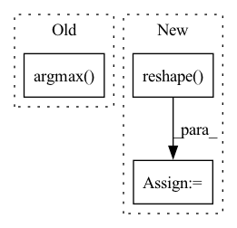

Pattern ID :22114
Before Change
if class_probs[:, -1].max() > 0.5:
batch_classes.append(idx + 1)
batch_scores.append(class_probs[:, -1].max().detach().cpu().numpy())
batch_boxes.append(class_boxes[class_probs[:, -1].argmax() ][None].detach().cpu().numpy())
if query_info is not None:
query_info[idx+1].append([class_probs[:, -1].max().item(), class_probs[:, -1].argmax().item()])After Change
bs, *_ = out["pred_logits"].shape
// Get probabilities from output logits and select query with highest prob
pred_probs = out["pred_logits"].sigmoid().squeeze().reshape( bs, 20, 27)
pred_boxes = out["pred_boxes"].reshape(bs, 20, 27, -1)
pred_query_ids = pred_probs.argmax(dim=-1)
// Adjust format to fit metric
boxes = []In pattern: SUPERPATTERN
Frequency: 3
Non-data size: 3
Instances Fragment ID: 70058477
Project Name: bwittmann/transoar
Commit Name: 09f57bf9bd1146b57db0cce80a0901defe5e5d63
Time: 2022-02-15
Author: bastian.wittmann@tum.de
File Name: transoar/inference.py
M Class Name: AnonimousClass
N Class Name: AnonimousClass
M Method Name: inference(2)
N Method Name: inference(2)
M Parent Class:
N Parent Class:
M File Name: transoar/inference.py
N File Name: transoar/inference.py
M Start Line: 9
M End Line: 36
N Start Line: 6
N End Line: 34
Before Change
def compute_metrics(*, logits, labels):
loss = cross_entropy_loss(logits=logits, labels=labels)
accuracy = jnp.mean(jnp.argmax( logits, -1) == labels)
metrics = {
"loss": loss,
"accuracy": accuracy,After Change
Compute metrics.
loss = cross_entropy_loss(logits=logits, labels=labels)
logits = jnp.reshape(logits, [logits.shape[0], 1])
labels = jnp.reshape( labels, [labels.shape[0], 1])
accuracy = jnp.mean(
(2 * labels - 1) * logits > 0, axis=0)
metrics = {
"loss": loss, Fragment ID: 70058479
Project Name: google/uncertainty-baselines
Commit Name: cb581a303749fa4e7f1a19422109627b3a6d61ea
Time: 2022-08-13
Author: no-reply@google.com
File Name: experimental/shoshin/training.py
M Class Name: AnonimousClass
N Class Name: AnonimousClass
M Method Name: compute_metrics(0)
N Method Name: compute_metrics(0)
M Parent Class:
N Parent Class:
M File Name: experimental/shoshin/training.py
N File Name: experimental/shoshin/training.py
M Start Line: 71
M End Line: 71
N Start Line: 66
N End Line: 69
Before Change
class Max(Function):
@staticmethod
def forward(ctx, input, axis=None):
am = input.argmax(axis=axis)
am = np.expand_dims(am, axis=axis) if axis is not None else np.array([am])
ctx.save_for_backward(input.shape, am, axis)
return np.take_along_axis(input, am, axis=axis).squeeze(axis=axis)
After Change
ret = np.amax(inp, axis=None if axis is None else tuple(axis), keepdims=True)
ctx.save_for_backward(inp, axis, ret)
if axis is not None:
ret = ret.reshape( [inp.shape[i] for i in range(len(inp.shape)) if i not in axis])
return ret
@staticmethod
def backward(ctx, grad_output): Fragment ID: 70058475
Project Name: geohot/tinygrad
Commit Name: e2f833f58fa165aabae3b587cb84733eadcbd490
Time: 2020-12-30
Author: 65973015+marcelbischoff@users.noreply.github.com
File Name: tinygrad/ops_cpu.py
M Class Name: Max
N Class Name: Max
M Method Name: forward(3)
N Method Name: forward(3)
M Parent Class: Function
N Parent Class: Function
M File Name: tinygrad/ops_cpu.py
N File Name: tinygrad/ops_cpu.py
M Start Line: 119
M End Line: 122
N Start Line: 119
N End Line: 124